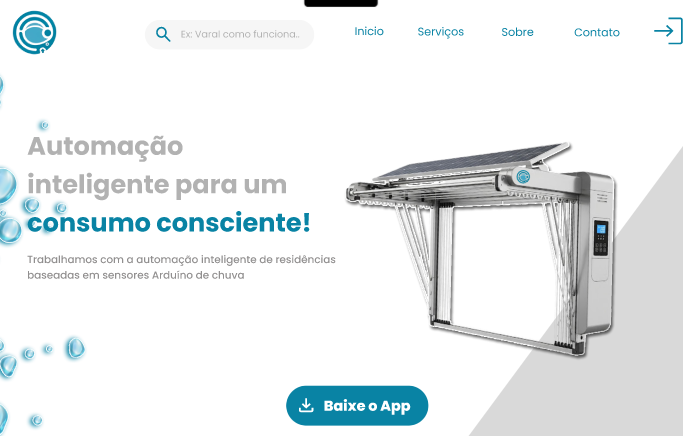

Modelagem de sistemas - 1º Trimestre
Planilha de Requisitos e Regras de Negócio.

Essa atividade me fez aprender sobre a criação de requisitos funcionais e não funcionais para um sistema. Trabalhei no contexto de uma hamburgueria fictícia que apelidei de "Burguer Balbis", o que tornou o processo mais divertido e prático. Durante o desenvolvimento, aprendi a organizar e documentar as necessidades do sistema de forma clara e objetiva, habilidades essenciais para projetos futuros.
Habilidades: H4, H7, H8
SA – Apresentação 01

Essa atividade foi a primeira apresentação da nossa SA. Um projeto muito interessante que desenvolvemos em grupo, chamado "AquaSense", o nosso objetivo é fazer uma automação inteligente de um varal que fecha baseado em sensores de Arduíno para a chuva. Durante o desenvolvimento, aprendemos a trabalhar em equipe, organizar ideias e aplicar conceitos de design e programação.
Habilidades: H1, H2, H3, H4, H6, H7
Modelagem de sistemas - 2º Trimestre
SA – WireFrame de Alta qualidade
Dando continuidade ao Projeto SA, prototipei o site e o app no Figma, definindo cores, fontes e componentes da marca. Foi um desafio que me ajudou a aprender mais sobre design e a transformar ideias em algo visual e concreto.
Habilidades: H1, H7